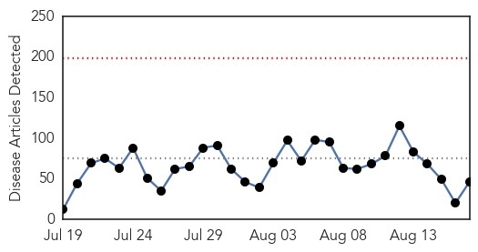
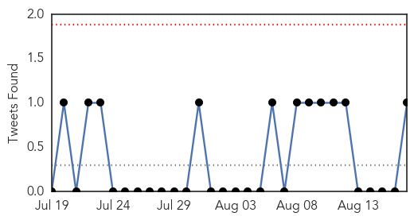
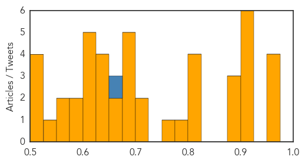

Unknown
30-Day Web Trend
0 alerts, 0 warnings

30-Day Twitter Trend
0 alerts, 0 warnings

Article Locations


Article Confidences
Top Articles:
- 0.962
- S. Korea to delay declaration of official end of MERS crisis - Xinhua
- 0.962
- S. Korea to delay declaration of official end of MERS crisis
- 0.956
- Public Health Notice Update - Outbreak of Cyclospora under investigation - News Press Release
- 0.954
- The Assam Tribune Online
- 0.917
- Chicago Tribune
- 0.917
- Chicago Tribune
- 0.917
- Chicago Tribune
- 0.917
- Chicago Tribune
- 0.917
- Chicago Tribune
- 0.900
- Pre-school and primary pupils to be offered flu vaccine again this autumn
- 0.891
- Researchers create largest genomic data set for Lassa virus
- 0.890
- Fever alert in hill state
- 0.888
- 50 Critical Access Hospitals to Know 2015
- 0.823
- What is Crohn's disease? What causes Crohn's disease?
- 0.823
- Residence had several confirmed cases of hot tub lung
- 0.820
- Imperfect test fuels alternative treatments for Lyme disease
- 0.815
- Polio Vaccines Laced with Sterilizing Hormone Discovered in Kenya – WHO is Controlling Population?
- 0.781
- WHO Statement on the 6th IHR Emergency Committee Meeting Regarding the International Spread of Wild Poliovirus - World
- 0.764
- ZINWA Dries Up Runde Catchment
- 0.724
- UN campaign to honour world’s health workers Vatican Radio
- 0.717
- Health officials encourage getting the flu shot with other requi - KRISTV.com
- 0.698
- Govt avails $1,5m for foot and mouth control
- 0.686
- Organization Calls For Termination of Non-Medical Vaccine Exemptions
- 0.684
- Neglecting Teen Health May Lead to Bigger Problems as Adults
- 0.677
- Red Cross schools Hamas militants in the rules of war
- 0.677
- Israel offers to exile hunger-striking Palestinian prisoner
- 0.669
- Tuberculosis case confirmed in Shawano Co.
- 0.666
- Humanitarian : The Government unable to meet the needs of Haitians returning...
- 0.649
- Sorry, deze pagina kon niet gevonden worden.
- 0.643
- Yosemite National Park campground to be closed while officials try to wipe out plague
- 0.632
- Taitung authorities express ...｜Society｜WCT
- 0.627
- South Sudan president fails to sign proposed peace deal with rebels
- 0.621
- Kissing Bugs Bringing Disease To Texas Homes; Chagas Disease Still Greatly Underestimated
- 0.617
- Buying pain medicines without a prescription? Find out whether it is safe or not.
- 0.614
- Foreigners among dead in Bangkok bomb blast
- 0.608
- Where the leaders are for Aug. 18
- 0.604
- Commission set up to investigate lead in Hong Kong water as more shocking test results flood in
- 0.599
- FDA warns makers of medical scopes in wake of deadly ‘superbug’ outbreaks
- 0.597
- Crayfish population in Cavan's Bruskey river threatened by disease
- 0.558
- Zambia National Broadcasting Corporation
- 0.551
- Crayfish population in Cavan's Bruskey river threatened by disease
- 0.548
- Swedish infant infects four others with resistant bacteria
- 0.519
- More tests done on North Battleford’s tap water - Saskatoon
- 0.518
- Health officials say they won't change HPV vaccine mandate
- 0.517
- Are Vitamin E supplements healthy or harmful?
- 0.513
- In the shadow of the census, a health emergency unfolds
Top Tweets:
- 0.664
- Riyadh MERS outbreak: Last time there were 9 cases in one day was in May & those cases were from 3 parts of the country. Big outbreak afoot